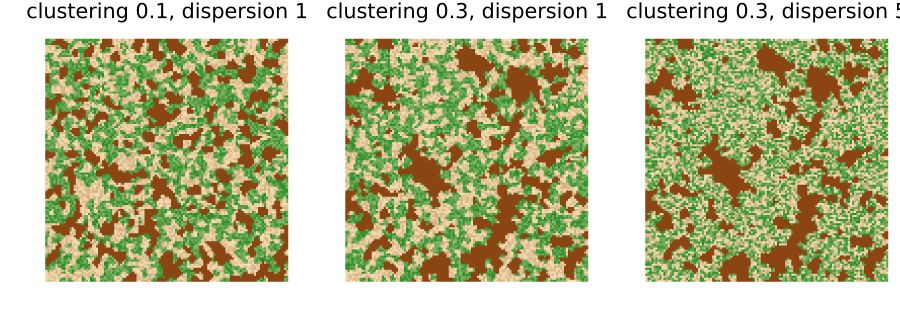
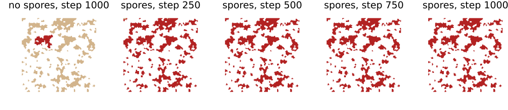
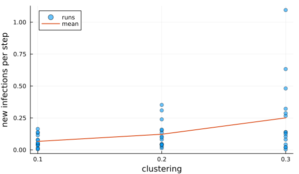
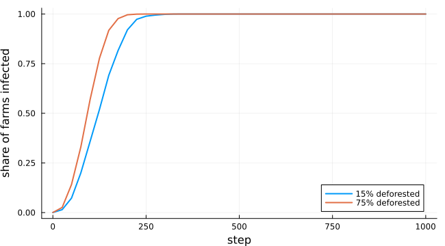

Coffee leaf rust in fragmented landscapes
Simon Frost
- Overview
- Landscapes
- The model
- Clustering, without spores
- With spores
- The archived code
- Deviations from the source
Overview
Coffee leaf rust, Hemileia vastatrix, spreads within a farm by rain splash and between farms by wind-borne spores. Forest canopy between farms may slow the spores. Beasley et al. (2022) combined a cellular automaton for spread within patches of coffee with random walks of spores through the surrounding matrix. They asked how the clustering of coffee and the amount and arrangement of deforestation change the rate of spread.
The authors published their code, and it differs from their paper in ways that change its behaviour. Spores are filtered by position because of an operator-precedence mistake, walks stop at a hard-coded index, spore infection is confined to one quadrant, and every spore infects next to the last spore’s end point. In the archived runs almost all infections came from the automaton. This model is an adaptation that follows the rules the authors describe. Their archived numbers can therefore not be reproduced exactly. The vignette reproduces their main claim with the automaton alone, then shows what intact spores change.
ENV["GKSwstype"] = "100"
using EcologicalCellularAutomata
using CellularAutomataCore
using Plots
using Random
using StatisticsLandscapes
A simulated landscape is 120 × 120 cells: a 100 × 100 study area and a buffer of 10. A quarter of it is coffee, placed by a neutral landscape model whose clustering parameter sets the size of the patches. The rest is forest or deforested land, from a second neutral landscape. Forest canopy cover is uniform on 0.6 to 1, and deforested canopy on 0 to 0.3. More deforestation dispersion means more, smaller deforested patches:
showland(coffee, canopy; title="") = heatmap(ifelse.(coffee .> 0, -0.5, canopy);
c=cgrad([:saddlebrown, :wheat, :forestgreen]),
clims=(-0.5, 1), aspect_ratio=:equal,
framestyle=:none, colorbar=false, title)
plot([showland(coffee_rust_landscape(Xoshiro(2); clustering=c, deforestation=0.45,
dispersion=d)...; title="clustering $c, dispersion $d")
for (c, d) in ((0.1, 1), (0.3, 1), (0.3, 5))]...; layout=(1, 3), size=(900, 320))
Coffee is dark brown. The matrix shades from pale (deforested) to green (forest).
The model
A susceptible coffee farm with N infected Moore neighbours is infected in a step with probability 0.1 (N + 1) / 10. That is the mean of the archived code’s 0.1 × Beta(N + 1, 9 − N) draw, which gives each farm the same distribution of outcomes. Between patches, each infected farm on the edge of a patch releases a spore into a neighbouring matrix cell. The spore walks to random matrix neighbours with a credit of 10, paying the canopy cover of each cell it enters, so it travels farther over deforested land. It then infects a susceptible farm next to where it stops with probability 0.5. The automaton is the model’s rule. The spores are a callback stored with the problem:
prob = problem(:coffee_rust; clustering=0.3, seed=3)
(model=build(:coffee_rust), callbacks=keys(prob.kwargs))(model = CAModel coffee_rust with states (coffee, canopy) and parameters (scale, credit, spore_infection), callbacks = (:callback,))One run, with and without spores:
withspores = solve(prob; saveat=250)
nospores = solve(problem(:coffee_rust; clustering=0.3, seed=3, spores=false); saveat=250)
rustmap(u, title) = heatmap(ifelse.(u.coffee .== 0, NaN, Float64.(u.coffee));
c=[:tan, :firebrick], clims=(1, 2), aspect_ratio=:equal,
framestyle=:none, colorbar=false, title)
plot(rustmap(nospores.u[end], "no spores, step 1000"),
[rustmap(u, "spores, step $t") for (t, u) in zip(withspores.t[2:end], withspores.u[2:end])]...;
layout=(1, 5), size=(1100, 240))
Healthy farms are tan and infected farms red. Without spores the rust stays in the patch where it started. With spores it reaches patches across the landscape within a few hundred steps.
Clustering, without spores
The source measured the rate of spread: the mean number of new infections per step over 1000 steps. It found clustering of coffee to be the main driver, with the highest expected and maximum rates at clustering 0.3 and little difference between 0.1 and 0.2. Its archived runs are dominated by the automaton. Here the automaton alone, over 15 landscapes for each clustering:
rates(clustering; spores, runs=15, kw...) =
[coffee_rust_rate(solve(problem(:coffee_rust; clustering, spores, seed=s, kw...);
save_everystep=false)) for s in 1:runs]
ca_only = Dict(c => rates(c; spores=false) for c in (0.1, 0.2, 0.3))
[(clustering=c, mean=round(mean(ca_only[c]); digits=3),
max=round(maximum(ca_only[c]); digits=3)) for c in (0.1, 0.2, 0.3)]3-element Vector{@NamedTuple{clustering::Float64, mean::Float64, max::Float64}}:
(clustering = 0.1, mean = 0.067, max = 0.164)
(clustering = 0.2, mean = 0.122, max = 0.352)
(clustering = 0.3, mean = 0.25, max = 1.095)scatter(repeat([0.1, 0.2, 0.3]; inner=15), vcat(ca_only[0.1], ca_only[0.2], ca_only[0.3]);
alpha=0.6, label="runs", xlabel="clustering", ylabel="new infections per step",
xticks=[0.1, 0.2, 0.3], size=(600, 350))
plot!([0.1, 0.2, 0.3], [mean(ca_only[c]) for c in (0.1, 0.2, 0.3)]; lw=2, label="mean")
As in the source, larger patches spread rust faster, with the highest mean and maximum rates at clustering 0.3. The rates are skewed: most runs stay in a small patch, while a few start in a large one and spread far. The source reports means of about 0.15, 0.17 and 0.35 and maxima of 1.1, 1.0 and 2.1. It found little difference between 0.1 and 0.2, where here the mean roughly doubles at each step. The landscape generators here are reimplementations of the source’s, which may account for part of the difference. It multiplies the prevalence inside the buffer by the coffee count of the whole landscape, which inflates its rates by about 1.4. This model counts infections inside the buffer only.
With spores
When spores walk and infect as the authors describe, they carry rust from patch to patch every step, and the landscape matters much less:
spore = Dict(c => rates(c; spores=true, runs=5) for c in (0.1, 0.3))
[(clustering=c, ca_only=round(mean(ca_only[c]); digits=2),
with_spores=round(mean(spore[c]); digits=2)) for c in (0.1, 0.3)]2-element Vector{@NamedTuple{clustering::Float64, ca_only::Float64, with_spores::Float64}}:
(clustering = 0.1, ca_only = 0.07, with_spores = 2.51)
(clustering = 0.3, ca_only = 0.25, with_spores = 2.56)With intact spores the rate is ten times or more that of the automaton alone, and clustering no longer matters. Every farm inside the buffer is infected by about step 250. Whether spores slow over forest matters only in how soon that happens. Here is the share of farms infected over time, for little and much deforestation:
fig = plot(; xlabel="step", ylabel="share of farms infected", legend=:bottomright,
size=(650, 360))
for (d, label) in ((0.15, "15% deforested"), (0.75, "75% deforested"))
curves = [coffee_rust_prevalence.(solve(problem(:coffee_rust; deforestation=d, seed=s);
saveat=25).u) for s in 1:5]
plot!(fig, 0:25:1000, mean(curves); label, lw=2)
end
fig
Deforested land lets spores travel farther before they land, so rust spreads through the landscape sooner. The source’s conclusion that clustering drives spread holds for its archived runs, in which spores rarely infected. With spores that disperse as described, the matrix would matter more.
The archived code
spores = :archived moves spores as the authors’ archived code does, errors included (see coffee_rust_spores_archived! for the rules). As in that code, the first infected farm may also lie in the buffer. Spores then almost never infect, so rust rarely leaves the patch where it started:
archived = [coffee_rust_prevalence(solve(problem(:coffee_rust; clustering=c, seed=s,
spores=:archived)).u[end])
for c in (0.1, 0.3), s in 1:12]
[(clustering=c, median_share_infected=round(median(archived[k, :]); digits=3),
largest=round(maximum(archived[k, :]); digits=3)) for (k, c) in enumerate((0.1, 0.3))]2-element Vector{@NamedTuple{clustering::Float64, median_share_infected::Float64, largest::Float64}}:
(clustering = 0.1, median_share_infected = 0.009, largest = 0.056)
(clustering = 0.3, median_share_infected = 0.06, largest = 0.425)The authors’ repository holds the outputs of their simulated landscapes: 50 runs for each of 75 settings of deforestation, its dispersion and the clustering of coffee. For each clustering, we pooled the 25 settings of deforestation and dispersion: 1250 archived runs against 300 runs of this model. The distributions of the share of inner farms infected after 100, 250, 500 and 1000 steps agree:
- the correlations between the two empirical cumulative distribution functions are 0.995 to 0.999;
- the Kolmogorov–Smirnov distances are 0.036 to 0.081, all below the 5% critical value of 0.087;
- the means agree within 5%.
A share of 30.7% of the archived runs start in the buffer, as a start anywhere implies (30.6%).
Deviations from the source
foreach(d -> println("- ", d), model_info(:coffee_rust).deviations)- By default the model follows the authors' intended rules, not their archived code, which differs from the paper and has errors that change its behaviour: spores filtered by an operator-precedence mistake, walks stopped at a hard-coded index, spore infection confined to one quadrant, and every spore infecting next to the last spore's end point. spores = :archived reproduces that code's behaviour (written from a description of it, as the code has no licence), with the first infection anywhere in the landscape, as there; a spore with no open move steps by (1, 1), as Python 3.8's random.choices does with zero weights (later versions raise an error).
- The CA infects a susceptible farm with N infected Moore neighbours with probability 0.1 (N + 1) / 10, the mean of the archived code's 0.1 x Beta(N + 1, 9 - N) draw, which gives each farm the same distribution of outcomes; the paper's Beta(N, 8 - N) is available as ca_rule = :paper.
- Nothing lies beyond the landscape's edges, as in the archived code; the paper says the rasters had reflective boundaries.
- Spores are released only into matrix cells inside the landscape, walk to admissible Moore neighbours (matrix, canopy above zero) with a credit of 10 (the archived code's value; the paper gives none), and are discarded at the end of each step, as in the archived code.
- The neutral landscape generators are reimplementations of NLMpy's randomClusterNN and randomElementNN with a different random number generator; their nearest-neighbour interpolation is SciPy's distance transform, ported so that it chooses among equally near cells exactly as SciPy does (tie-breaking alone changed the number of forest patches by 17%). Against 200 landscapes per setting from NLMpy itself (four settings), the coffee share, patch numbers and sizes, coffee-coffee adjacency, forest share and forest patches agree (31 of 32 two-sample Kolmogorov-Smirnov distances below the 5% critical value, 0.136).
- The rate of spread counts new infections among the farms inside the buffer; the source multiplies the inner prevalence by the coffee count of the whole landscape.
- Only simulated landscapes are provided; the Costa Rican rasters are not redistributed.Beasley, Emily M., Natalia Aristizábal, Edgar M. Bueno, and Easton R. White. 2022. “Spatially Explicit Models Predict Coffee Rust Spread in Fragmented Landscapes.” Landscape Ecology 37 (8): 2165–78. https://doi.org/10.1007/s10980-022-01473-1.